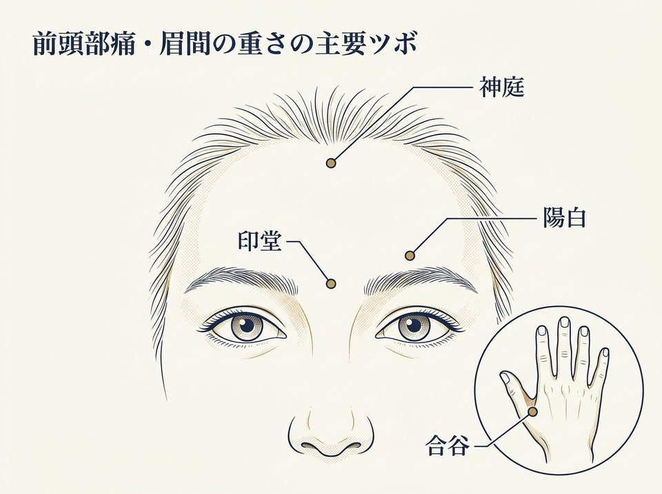

人間関係リセット症候群の鍼灸
対人ストレスで過敏になった脳と自律神経の緊張を和らげ、穏やかな心身バランスを取り戻すための鍼灸ケアを行います。


院長YouTube解説・関連動画
人間が陥ってしまう可能性のある心理状態を表した造語
人間関係リセット症候群は、繋がりのある人間関係を絶ちたい衝動に駆られ、実際に人間関係をリセットしてしまうことです。
人間が陥ってしまう可能性のある心理状態を表した造語で、人間関係リセット症候群は改善を行うことが必要な病気ではありません。
現代は、連絡をとりたいときにとることができるという便利な時代ですが、常に誰かとつながっているということに対してストレスや負担を感じてしまう人もいるのです。
常に誰かとつながっているという状態に疲れてしまい、突然連絡先を変更したり引っ越したりというような人間関係をリセットするための行動をしてしまう人もいるのです。
一時的に人間関係をリセットすることは悪いことではありません。しかし、何度も繰り返し人間関係をリセットする癖がついてしまっている場合、人間関係リセット症候群と言います。
特定の相手との人間関係をリセットすることもありますが、SNSで繋がっている人など関係を持っている人の全員を衝動的にリセットしたくなることもあります。
原因は、周りからの期待や気遣い、嫌われていると感じる不安など
人間関係リセット症候群の原因は、ストレスです。周りからの期待や評価、気遣いや嫌われていると感じる不安などストレスになることは色々あります。
周りからの期待に応えようとしてしまうことで、自分を追い込み過ぎてしまい、過剰なストレスをため込んでしまうと突然連絡を取ることができなくなることがあるのです。
人間関係で色々な人の間に挟まれ、長い期間にわたって色々な人に対して気を遣うことが必要な状況に置かれると精神的な疲れが溜まっていき、人間関係を衝動的にリセットしてしまうこともあります。
周りの人に嫌われていたり避けられたりしているかもしれないという不安や恐怖を感じて、不安や恐怖から逃れるために人間関係をリセットしてしまうケースも多いと言われています。
さらに、状況や環境が変わることで関係性を保つ必要を感じなくなることで人間関係をリセットするケースもあります。
その場だけの人間関係を築くタイプの人の多くは、人との関係が表面的であることがほとんどで価値を感じていないため、転職や転勤など関係性を保つ必要がなくなると人間関係をリセットすることもあるのです。
1. 心理的な要因
過去のトラウマや失敗経験: 人間関係において過去に裏切りや失敗を経験した場合、再度そのような痛みを避けたいという心理が働きます。このため、新しい関係を築くことに対して過度な不安を感じ、既存の関係をリセットすることで安心感を得ようとします。
自己防衛メカニズム: 他者との深い関係が恐怖や不安を引き起こす場合、自己防衛として関係を切り離す行動に出ることがあります。この行動は、自己の心を守るための無意識的な反応です。
完璧主義: 他者との関係において、完璧な形でなければならないという強い信念を持つ場合、少しでも不満や違和感を感じると、関係をリセットしてしまうことがあります。
2. 性格的な要因
回避性パーソナリティ: 人との関わりや親密な関係を避ける傾向が強い人は、人間関係をリセットすることで安心感を得ることが多いです。
依存性パーソナリティ: 逆に、依存性が強い人も、人間関係が一定の安心感を提供しなくなると、新しい関係に依存しようとするため、リセットを繰り返すことがあります。
3. 環境的な要因
デジタル化の影響: SNSやメッセージアプリの普及により、人間関係が瞬時に始まり、また簡単に終わることが可能となったため、リセット症候群を助長する要因となっていると考えられます。
孤独の増加: 都市化や生活スタイルの変化により、孤独を感じる人が増えており、新しい人間関係を築くことで孤独感を埋めようとする一方で、その関係が満たされないとすぐにリセットする傾向が強まることがあります。
4. 文化的要因
現代の価値観の変化: 現代社会では、個人の自由や自己実現が重視される傾向が強まっており、従来の長期的な関係の維持よりも、自己の成長や幸福感を優先する価値観が広がっています。このような文化的な背景が、リセット症候群を引き起こしやすくしています。
発症する人は、いくつかの性格の特徴がある
人間関係リセット症候群を発症する人は、いくつかの性格の特徴があることが多いです。
１つ目の特徴は完璧主義な性格です。完璧主義の人は、周りからの評価を気にしすぎるために周りからの期待に対して完璧に応えようとしてしまい、精神的にも身体的にも異常なくらいまでに自分を追い込んでしまうことがあります。
完璧主義の人は人間関係においても完璧を求める傾向があります。そのため、自分の理想と周りからの評価が大きく違うと人間関係をリセットしようとしてしまうと言われています。
２つ目は、自分を出すことができない性格です。自分を出せない人は、他人からどう見られているのかを気にしすぎる傾向があります。そのため、人間関係が表面になってしまい、気持ちをきちんと伝えることができず、ストレスが溜まりやすいのです。
３つ目は、人間関係をその場での手段と考える性格です。このような性格の人は、一人行動を好む人に多いと言われています。最低限の人間関係は築きますが、生活環境が変わるとその場の人間関係は必要なくなるため人間関係をリセットしてしまうのです。
４つ目はストレスを抱えやすい人です。特に、優しすぎる人や優柔不断な人、繊細な人やコミュニケーションが苦手な人は人間関係においてストレスを抱えやすいです。
５つ目はマイペースな性格です。一人行動が好きな人でマイペースに物事を進めたい人は、他人と行動する時間が増えると自分の時間を求めるようになります。人間関係を面倒だと思うようになると人間関係をリセットしてしまうことがあるのです。
性格だけではなく、相談できる相手がいなかったり生活習慣が乱れていたりする場合も人間関係リセット症候群につながりやすいと言われています。
ほとんど運動をすることがなかったり、睡眠不足であったり、栄養バランスが偏っていたり、タバコやアルコールが過剰であったりすると、疲れが溜まり、ネガティブな思考になりやすくなります。
ネガティブな思考は人間関係も面倒だと考えてしまうことにつながりやすいため人間関係リセット症候群につながってしまうのです。
・突発的な関係断絶
突然、友人、同僚、恋人、家族などの人間関係を一方的に断ち切る行動が見られます。これには、連絡手段をすべて遮断したり、SNSやメッセージアプリでのブロック、アカウント削除などの行為が含まれます。
・連続的な人間関係のリセット
短期間で同じ行動を繰り返すことが特徴です。例えば、同じ人間関係を何度も切ったり、再構築したりするパターンが見られます。新しい関係を始めても、少しの摩擦や不満を感じるとすぐにリセットし、また別の関係を求める傾向があります。
・親密な関係を避ける
他者と深い親密な関係を築くことを避けるため、表面的な関係や短期間の交流に終始することが多いです。親しい関係になると、途端に不安感や恐怖感を覚え、関係をリセットする行動に出ることがあります。
・不安感や孤独感の増加
リセットを繰り返すことで、一時的には安心感を得られるものの、結果として孤独感や不安感が増す傾向にあります。人間関係の断絶により、支えや安心感を失うため、慢性的な孤独感に悩まされることがあります。
・過剰なストレス反応
人間関係が自分の思い通りにいかない場合、過度なストレスや不安を感じ、リセット行動が激化することがあります。このストレスは、体調不良や心理的な不安定さとして表れることもあります。
・決断力や一貫性の欠如
人間関係のリセットを繰り返すことで、意思決定に一貫性がなくなる傾向があります。関係を持続させるかリセットするかの判断が曖昧であり、結果として自分自身にも不信感を抱くことがあります。
・社会的な孤立の進行
何度も人間関係をリセットすることで、周囲から「信用できない人」「面倒な人」と見なされ、他者との関係が希薄化し、社会的な孤立が進む可能性があります。
・精神的な影響
自己評価の低下: 繰り返し関係をリセットすることで、「自分は人と良い関係を築けない」「自分には問題があるのではないか」という自己否定的な思考が強まり、自己評価が低下します。
感情の不安定さ: リセット後の孤独感や不安感、罪悪感などが交錯し、感情の起伏が激しくなることがあります。
人間関係リセット症候群は病気ではないため、特別な改善は必要ありません。しかし、人間関係を良い状態で保ちたいと思っていても定期的に人間関係をリセットしたい衝動に駆られてしまう場合は改善することをお勧めします。
人間関係リセット症候群を改善する方法は、生活習慣の乱れを整え、気分転換をすることです。きちんと睡眠をとり、適度な運動をすることで疲れを改善し、気分をリフレッシュさせることができます。
相談できる相手を見つけることも大事です。相談できる相手がいないということは人間関係リセット症候群の原因にもなります。
周りに話を聞いてくれる人がいることで、人間関係をリセットしたい気持ちを抑えることができると期待できます。
人間関係をリセットしたいと思った時には、一度感情や悩みを紙に書き出すことをお勧めします。紙に書き出すことで思いや考えが整理でき、冷静な判断ができるようになるでしょう。
人間関係をリセットすることで状況が良くなることもあります。必ずしも悪いわけではありませんが、人間関係をリセットしたい衝動に対して困っている場合には改善することができるのです。
認知行動: 人間関係リセット症候群の根底には、ネガティブな思考パターンや不安、恐怖が関与していることが多いため、認知行動療法を用いてこれらの思考を検討し、現実的で前向きなものに変える手法が有効です。特に、衝動的な関係リセットの背後にある思考の癖を理解し、自己制御の方法を学ぶことが目標となります。
対人関係: 人間関係の問題を扱う専門的な方法で、クライアントが他者との関係をより良くするためのスキルを学びます。コミュニケーション技術の向上や感情の表現方法を改善し、健康的で持続可能な人間関係を築くための支援が行われます。
感情調整: 自分の感情を理解し、適切に表現し、他者との関係で感情的な反応を管理する方法を学ぶための療法です。感情をコントロールする技術を身につけることで、突発的なリセット行動を防ぐ効果が期待されます。
薬: 必要に応じて、抗うつ薬や抗不安薬、気分安定薬などを用いて、過度な不安感や衝動性を緩和することがあります。ただし、薬はあくまで補助的なものであり、カウンセリングと併用することが一般的です。
ソーシャルスキルトレーニング:社会的スキルの向上を目指すトレーニングで、人との関わり方、コミュニケーション技術、問題解決能力などを強化します。特に、他者と良好な関係を築くための実践的な技術を学び、日常生活での関係をスムーズにするための具体的なスキルを身につけます。
グループセラピー:グループセラピーでは、同じような問題を抱える人たちと共に、互いの経験を共有し、サポートし合うことで、孤独感を軽減し、より良い人間関係の築き方を学びます。これにより、他者との関係を見直し、肯定的な関係を育むための新たな視点を得ることができます。
不安になることは心の弱さではない
人の一言に引きずられたり嫌われたかもしれないと不安が止まらなくなったりするのは、脳の一部の仕組みの誤作動かもしれません。人間関係で傷つきやすい人や不安に敏感な人には共通する脳の癖があります。ここでは、最新科学の最新研究をもとに脳の特徴を徹底解説します。
院長もGoogleのクチコミなどでいろいろなことを言われており、元々来院されていた方や来たことがない方までいろいろなことを書かれますが、元々来院されていた方の場合へこむこともあります。また、鍼灸院に来る人は体調不良の人がほとんどで、良かれと思って前向きなことを話すと本当に良くなるのかと怒られることもあります。ただそういう人ほど改善した時非常に感激してくれる方が多く、感情的で繊細な人は当院では大歓迎です。
人間関係で強い不安を感じる時に最初に働くのは脳の扁桃体と言われる脳の奥の小さな領域です。扁桃体は危険と判断した時に心拍数を上昇させ呼吸を早めて緊張状態を作ります。これは進化の余波でかつて部族からの拒絶は生命の危機でした。そのため社会的断絶も生命の危険と同じように危機を認識するのです。
怒った表情、無視されたライン、曖昧な言い回しなど全てが扁桃体のスイッチを押すトリガーになります。問題はその反応が過剰に作動することで、慢性化すると脳の過敏モードになります。
当院で怒られる方も痛みや辛さで脳が過敏状態になっていて一言が癇に障ってしまう状態になっているのです。決してその方が悪いわけではなく、そういう状況であるということです。
🎥 他のYouTube切り抜き・解説を読む（あと1件）▼
H S Pについて
HSPはアメリカの心理学者であるエレイン・N・アーロンさんが提唱した概念で、病気ではなく生まれ持った特性です。５人に１人がHSPとも言われています。
〈HSPの特徴〉
・感情反応が強い
・些細な刺激を察知する
・心の境界線が薄い
心の境界線が薄いということは他者からの影響を受けやすくて自己否定しやすい傾向もあります。SNSの影響も受けやすいです。
HSPの人の脳は高感度カメラのように精密で敏感です。共感、観察、深い処理に関わる脳の領域がHSPでは平均よりも強く活動していることがMRIの研究で確認されています。
HSPの方の脳は、人の表情、空気の変化、言葉のニュアンスを重要な情報源として捉えて詳細に処理します。疲れやすく記憶にも残りやすく、次回以降の対人不安につながるのです。
▼ 詳しく知りたい項目だけタップして開けます（全項目の医学解説を収録）
01. 原因とメカニズム
なぜ症状が起きるのか・鍼灸の作用機序を読む
▼
01. 原因とメカニズム
なぜ症状が起きるのか・鍼灸の作用機序を読む
人間関係リセット症候群は医学的病名ではありませんが、対人ストレスから繋がりを衝動的に断ち切ってしまう心理状態を指します。周囲の期待や評価への過度な不安、完璧主義やHSP気質、SNS環境などが重なると、脳の扁桃体が過敏に反応し前頭前野のブレーキが効きにくい「脳過敏モード」に陥りやすくなります。強い緊張状態が続くことで動悸や不眠など自律神経の不調も引き起こされ、回避行動の悪循環を招きます。
なぜ鍼灸で改善へ向かうのか？（作用機序の図解）
人間関係リセット症候群に対する鍼灸は、体性-自律神経反射による交感・副交感神経の切替機序を通じて、お体本来の回復力を引き出します。
首肩・みぞおち・手足の過緊張ポイントへ、交感神経を刺激しすぎない優しい刺激を行います。
体性-自律神経反射を通じて脳幹の迷走神経核へ働きかけ、心拍変動（HF/SDNN）を整えます。
過剰なコルチゾール分泌や過覚醒状態を落ち着かせ、深い呼吸と入眠スイッチを引き出します。
「活動（昼）」と「休息（夜）」のメリハリが戻り、動悸・不眠・倦怠感の波が穏やかになります。
02. よくあるお悩み
このような症状はありませんか？（4項目）
▼
02. よくあるお悩み
このような症状はありませんか？（4項目）
- ✓SNSのブロックや連絡先削除など人間関係を衝動的に絶ってしまう
- ✓周囲の評価や嫌われる不安が強く人付き合いが極端に疲れる
- ✓親密な関係を築く前に距離を置いてしまい後で孤独感が残る
- ✓浅い眠りや動悸・イライラなど自律神経の乱れを感じる
03. 当院の施術アプローチ
施術の進め方・改善のポイントを見る
▼
03. 当院の施術アプローチ
施術の進め方・改善のポイントを見る
04. ツボ詳細・セルフケア一覧
不眠・うつ・不安・自律神経失調の全身ツボ図解（6穴）
▼
04. ツボ詳細・セルフケア一覧
不眠・うつ・不安・自律神経失調の全身ツボ図解（6穴）
実際の施術ではお一人おひとりの体質・症状に合わせて選穴しますが、不眠症・抑うつ・不安障害・パニック・自律神経失調の睡眠・心身ケアの臨床でよく用いられる代表的なツボの目安です。
| ツボ名 | 位置の目安 | 主な狙い | セルフケアの注意点 |
|---|---|---|---|
| 百会（ひゃくえ） | 頭頂部の中央 | 脳の過覚醒・考えすぎによる緊張の鎮静 | 就寝前に指の腹で5秒ほど優しく押して深呼吸します。 |
| 印堂（いんどう） | 左右の眉間の真ん中 | 入眠スイッチの切り替え・不安感や焦燥感の緩和 | 目を閉じて軽く触れるだけでも副交感神経が優位になりやすくなります。 |
| 安眠（あんみん） | 耳の後ろの出っ張った骨の斜め下のくぼみ | 入眠困難・中途覚醒・首の緊張緩和 | 枕に当たる首の後ろを温めるとより緩みます。 |
| 内関（ないかん） | 手首の横ジワから指3本分肘寄りの中央 | 胸のざわざわ・動悸・予期不安の鎮静 | 不安を感じたときのセルフケアとしても心強いツボです。 |
| 神門（しんもん） | 手首の横ジワの小指側のくぼみ | 不眠・精神疲労・ストレス応答の安定化 | 心療内科・精神科のお薬は必ず主治医の指示通り継続してください。 |
| 三陰交（さんいんこう） | 内くるぶしの上から指4本分上 | 足元の冷え改善と睡眠リズムの定着 | お風呂上がりの優しい指圧やレッグウォーマーが有効です。 |
05. 医学的根拠・国際査読論文（PubMed / Cochrane）
科学的エビデンス・出典リンク一覧（3件）
▼
05. 医学的根拠・国際査読論文（PubMed / Cochrane）
科学的エビデンス・出典リンク一覧（3件）
国際的な医学データベース（PubMed・Cochrane等）で報告されている自律神経失調・不安・ストレス・動悸領域の代表的な査読済み鍼灸研究をまとめています（標準治療との併用や研究上の限界を含めて正確に掲載）。
| 年・研究デザイン | 対象・規模 | 主な結果 | 限界・出典 |
|---|---|---|---|
| 2025年 メタ解析 | 全般性不安障害（GAD）14 RCTs（n=968） | シャム鍼比で不安尺度（HAMA・GAD-7）および睡眠（PSQI）が有意に改善。 | 効果量は中等度でプロトコル標準化が課題。 Front Psychiatry (PMID: 41312341) |
| 2025年 メタ解析 | 自律神経・心拍変動（HRV）10 RCTs（n=744） | 副交感神経指標（HF・RMSSD）の上昇と自律神経バランス調整を示唆。 | 測定条件のばらつきあり。 Front Neurosci (PMID: 41230507) |
| 2023年 メタ解析 | 手技鍼 vs シャム鍼（自律神経）9 RCTs | 自律神経反応の調整作用を報告。 | 短期評価が中心で長期臨床転帰は要検証。 Complement Ther Med (PMID: 36494036) |
参考文献・出典
- 2025年 メタ解析（全般性不安障害（GAD）14 RCTs（n=968））— Front Psychiatry (PMID: 41312341)
- 2025年 メタ解析（自律神経・心拍変動（HRV）10 RCTs（n=744））— Front Neurosci (PMID: 41230507)
- 2023年 メタ解析（手技鍼 vs シャム鍼（自律神経）9 RCTs）— Complement Ther Med (PMID: 36494036)
06. よくある質問（FAQ）
よくあるご質問を見る（2件）
▼
06. よくある質問（FAQ）
よくあるご質問を見る（2件）
Q. 日常で気をつけたほうがよいセルフケアはありますか？
首への強いストレッチやマッサージ、カフェインや激辛食品の摂りすぎは神経を刺激しやすいため控え、深呼吸や耳周りの優しいケアをおすすめしています。
Q. 病院の診断がなくても相談できますか？
はい、医学的な診断名がない状態でも、対人ストレスによる緊張や不眠などの自律神経ケアとしてご相談いただけます。
あわせて読まれる関連疾患（自律神経のお悩み）
入眠困難や中途覚醒などが続き日中の不調を招く状態です。自律神経の過緊張を鎮め、心身が休息しやすい環境を補完的に整えます。
ASDの特性に伴う感覚過敏や環境ストレスから生じる二次的な自律神経の乱れ・筋緊張・疲労を穏やかにサポートします。
続く過度な不安や動悸・不眠などの身体症状に対し、自律神経と東洋医学の気滞ケアで心身の落ち着きをサポートします。
昼食時に一人になることへの強い不安や対人プレッシャーで心身が緊張する状態。必要に応じた相談と並行し、膻中等で自律神経を整えます。
身近な人との情緒的な共感の乏しさと周囲の無理解から心身が疲弊する状態。心理支援と並行し、百会・期門等で自律神経と倦怠感を整えます。
抗うつ薬等の影響で脳内セロトニンが過剰になり発症する急性薬物障害。救急医療が絶対最優先で急性期は鍼灸対象外です。
CLINICAL RECOVERY CASES
✨ 実際の臨床改善事例・回復経過を見る
銀座本院をはじめ各院での実際の改善事例を症状別に絞り込んでご確認いただけます。
おひとりで悩まず、まずはご相談ください
銀座本院・川口・大宮・横浜・博多・田無の各院でご予約を承っております。